群馬の養蚕信仰を巡る旅、お次は県南にある太田市の
冠稲荷神社。
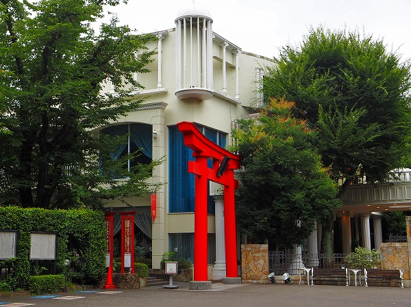
結婚式場が併設されているような大規模な神社だ。
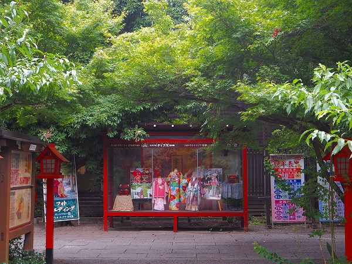
これまで紹介してきた県北のローカルな稲荷社とはかなり趣も違うが、この地域を代表する稲荷社、ということで。
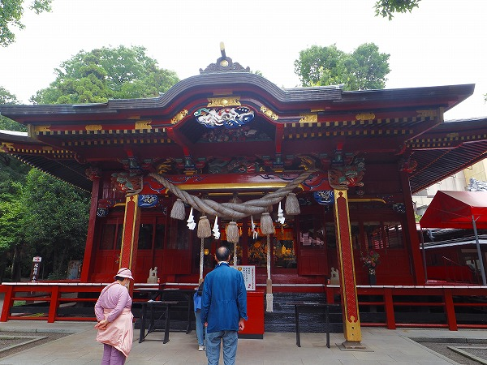
ド派手な社殿。
ピカピカに塗装されているので、新しい建物なのか古い建物なのか良く判らない。
社伝を見ると江戸時代に建てられたものだとか。
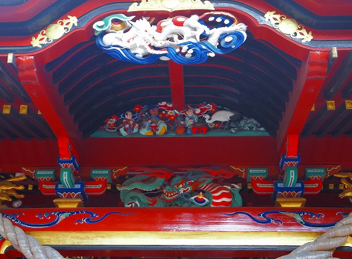
この神社もまた養蚕信仰の拠点だったと言われている。
拝殿内部は見られなかったが明治24年に奉納された繭玉額などもあるそうだ。
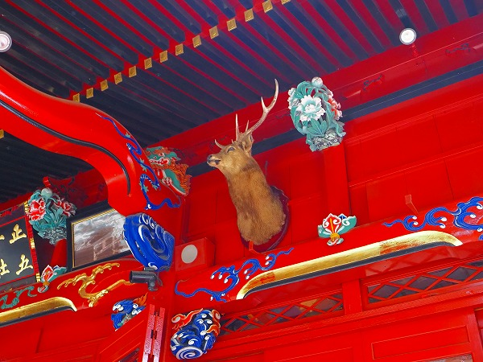
えっ！ 鹿？
何で鹿の首が？
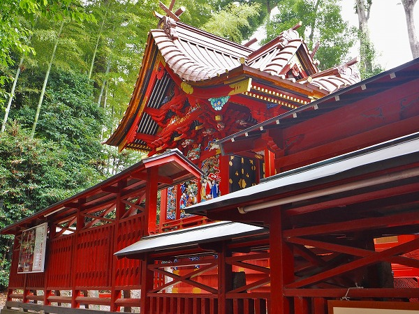
本殿。
拝殿と共に県の重要文化財になっている。
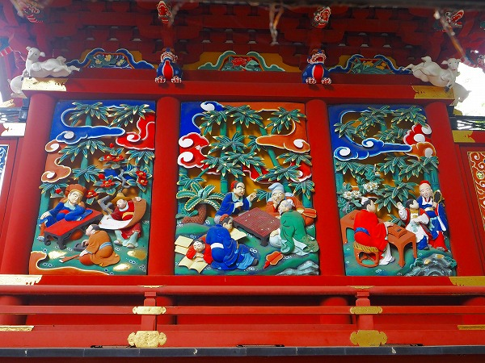
壁面の彫刻。
彫刻のレベルはかなりのものだ。
江戸時代の究極の社寺装飾のひとつといえよう。お見事。
で、その本殿の脇にある建物。
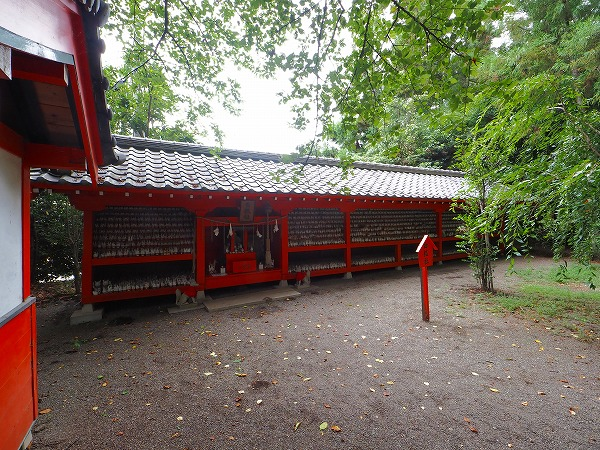
白狐社という。
この辺になると訪れる参拝客はほとんどいない。
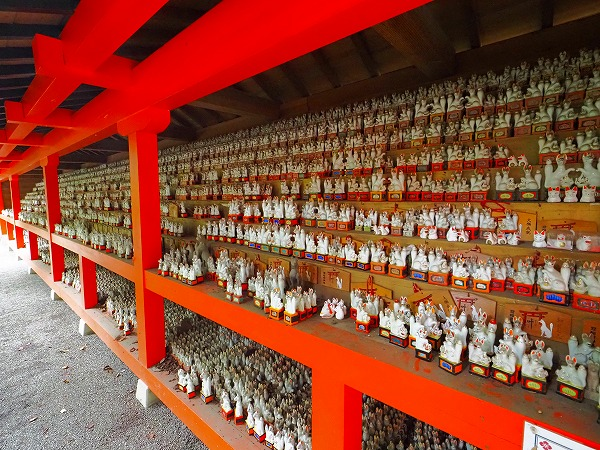
そこには夥しい数の狐の陶器が並んでいる。
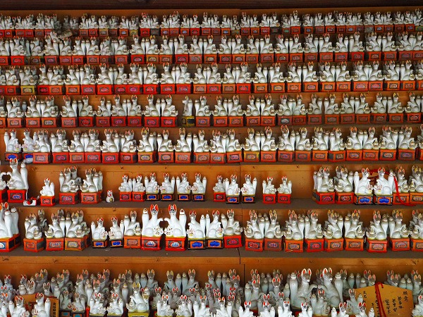
あまりにも数が多すぎて目がおかしくなってきます。
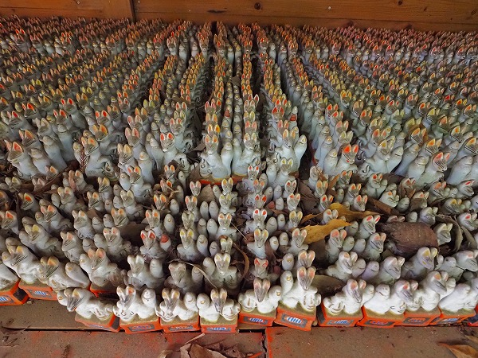
ここに奉納されているのはほとんどが左右対象型の狐ばかりだ。
この辺は地域差があるのだろうか。
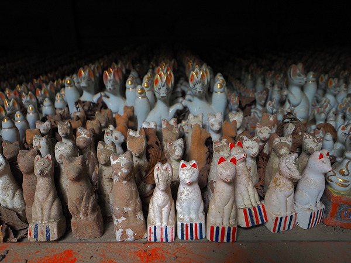
鉄砲狐も少数ながら奉納されていた。
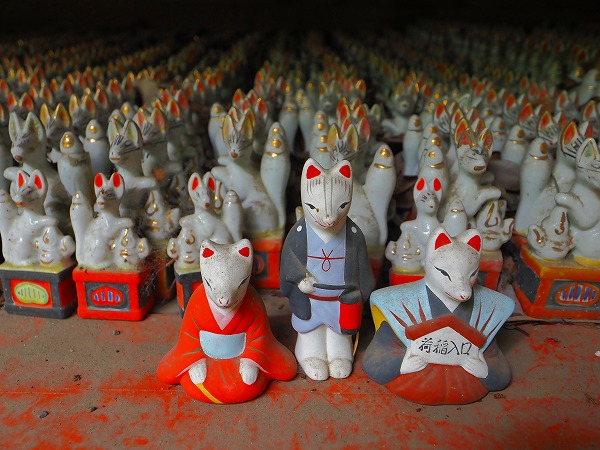
着物の狐像。これは以前
伏見稲荷神社で見た。
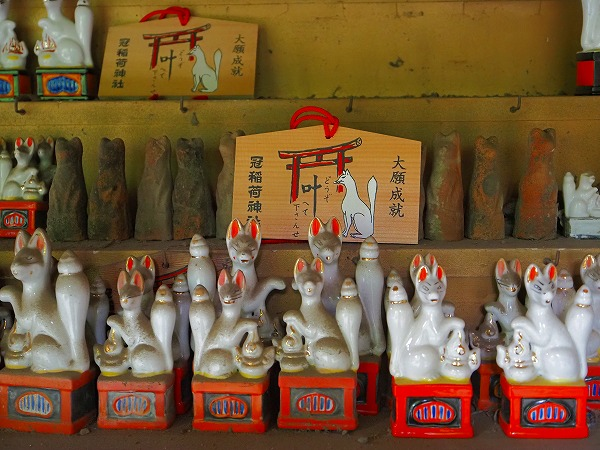
そういえば、以前伊勢崎の
小泉稲荷神社でも大量の狐像が奉納されているのを見た事があった。
当時は家庭で要らなくなった狐を預かっているのだと思っていたが、あれも養蚕家が奉納したものだったのだろう。
そういえばあそこも左右対称型の狐像ばかりだった。
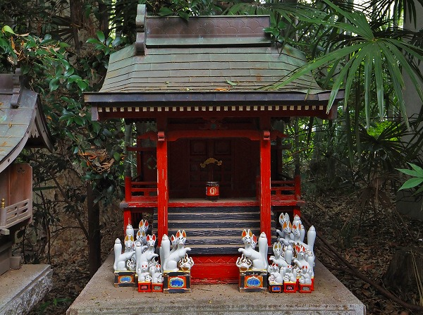
小さな社にも狐が。
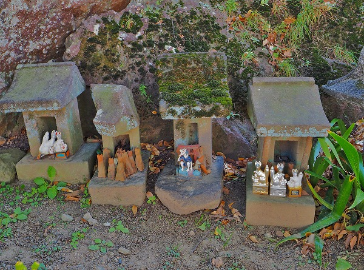
見落としそうな小さな社にも狐がいる。
群馬県はかなり頻繁に訪れる場所で、これまでかなりの神社にも訪れてきた。
しかし今まで当たり前のように社に置いてあった狐像にちゃあんと意味があったということに今更ながら驚いている。
神社だから、稲荷だから狐あって当たり前でしょ、としか思っていなかったが、そこには養蚕家の必死な思いが込められていたのだ。
そう考えると農業や漁業と同様に養蚕業が独自の信仰を生み出すまでに発展、進化した特殊な産業だったんだ、という事を痛感した。
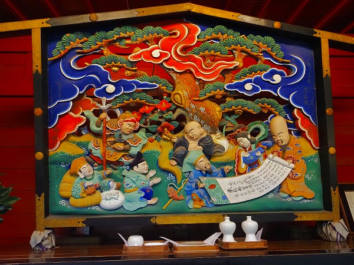
七福神の彫刻。
これも18世紀中頃のもの。
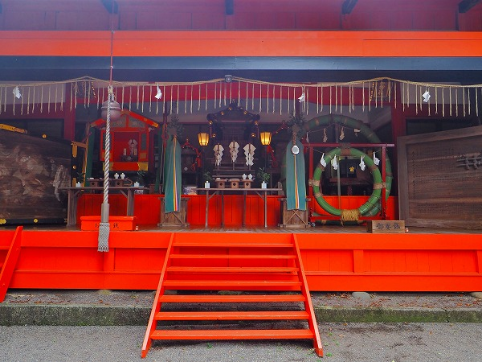
神楽殿。
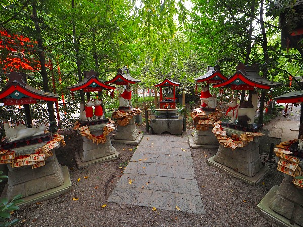
境内の一画に狐が並ぶコーナーがあった。
それぞれの願い事別に狐がいるのだ。
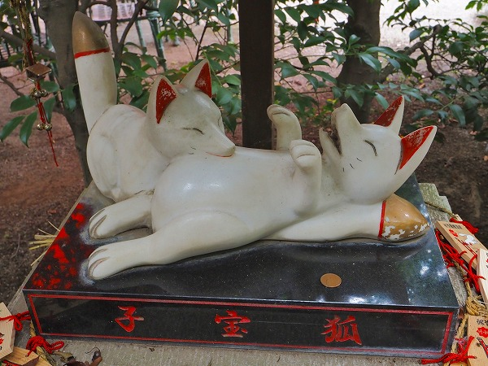
子宝狐。親子の狐なのだろうか。
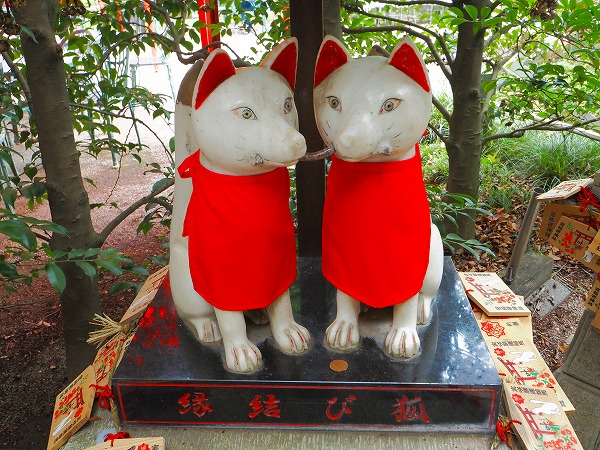
縁結び狐。これはカップルですね。
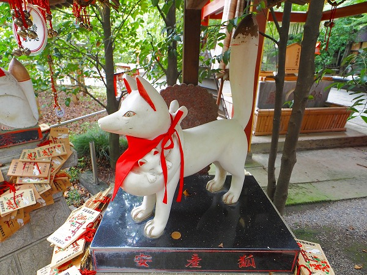
安産狐。親子ですか。
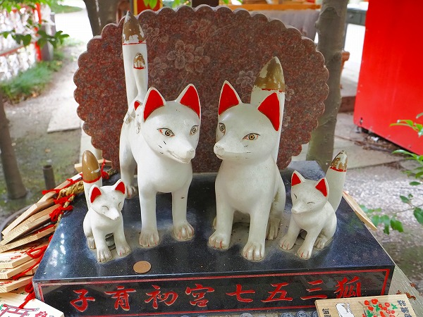
子育初宮七五三狐。随分詰め込みましたね。
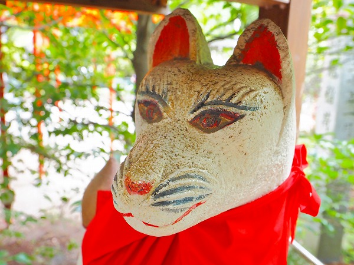
メイクばっちりの狐も。
近くには人形代社もあった。
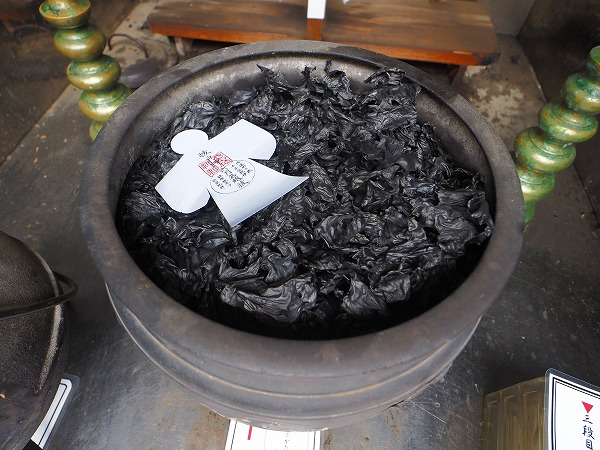
人形を焚き上げて災厄を祓うというもの。他にも犬猫の人形代もあった。
色々考えているな。
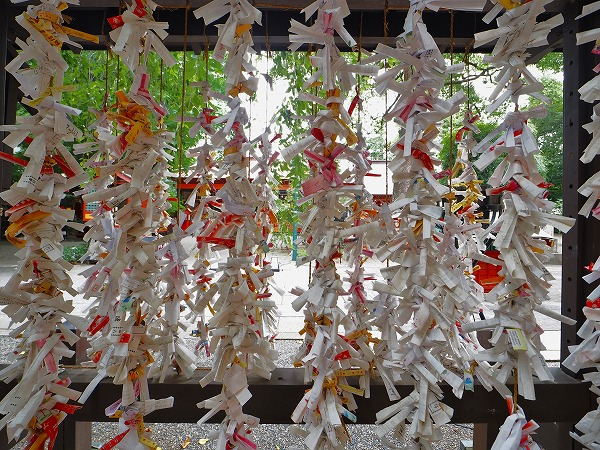
普段から番外地みたいな社寺を巡っている身としては眩いほどきめ細やかな現世利益に満ちた神社であった。
きっと神社経営的にはコレが正解なのだろう。
皮肉に聞こえたらスミマセン。
でもこの御時世、立派な事だと思いますよ。
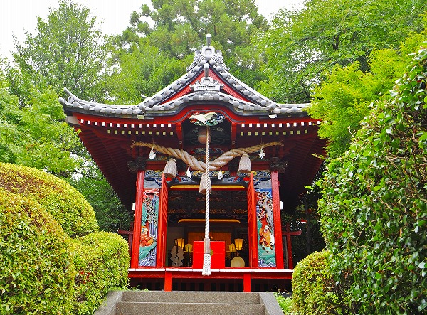
最後に寄った聖天宮。
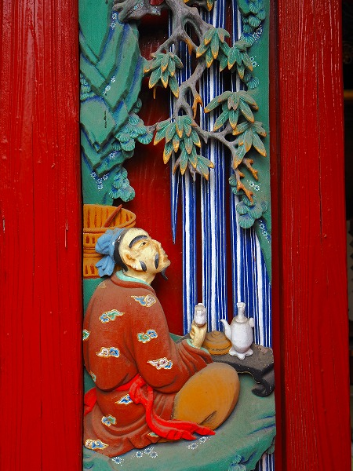
ここもまた精緻な彫刻で覆われた建物だった。
その他ストーカー除け祈願など奇抜な参詣もあって結構楽しめた神社でした、はい。
（2022.08.）
稲荷と鉄砲狐を探す旅、次は沼田市の
東源寺稲荷。
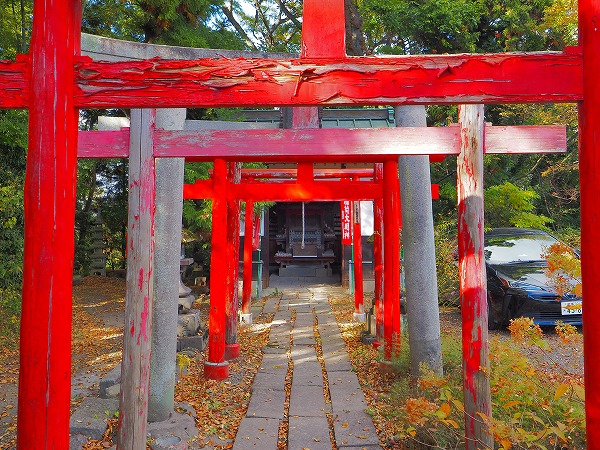
東源寺というお寺の境内にある小さな稲荷社だ。
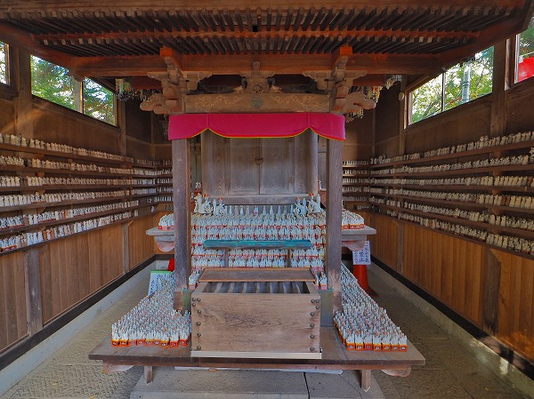
内部。
ここもまた凄い数の狐像が並んでいる。
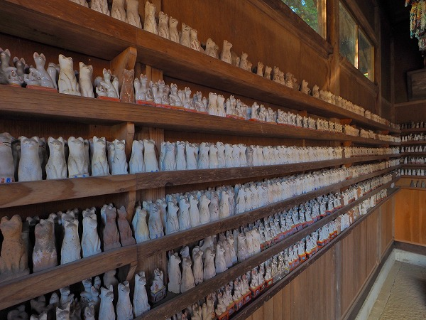 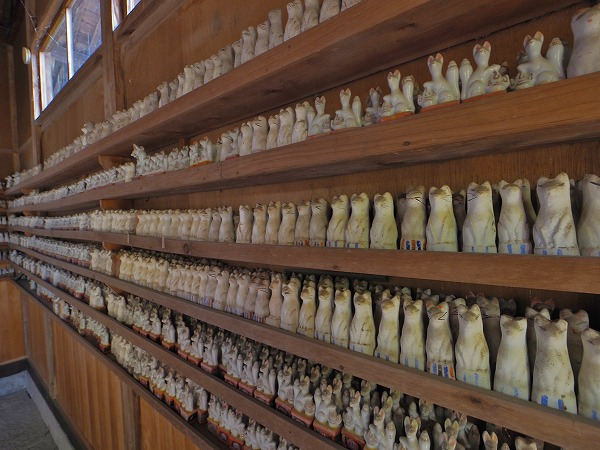
左右と後の壁面の棚に狐像がズラリと並んでいる。
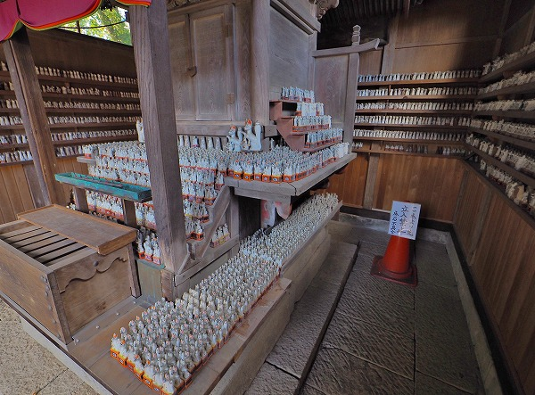
奥の方は敷石の工事で入れなかった。
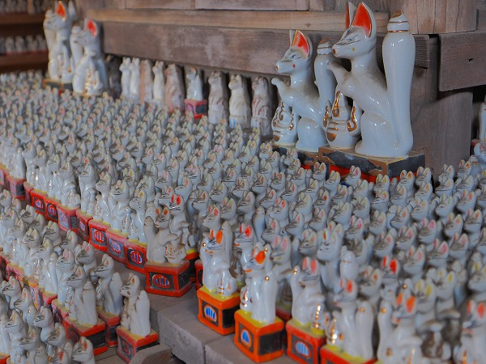
ここは比率としては鉄砲狐と左右対称型狐が同数程度だろうか。
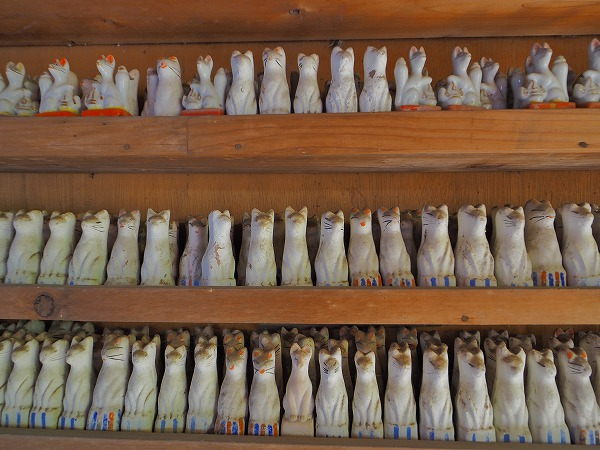
棚の方には鉄砲狐が沢山あったが、中央部には左右対称型狐がびっしり並んでいた。
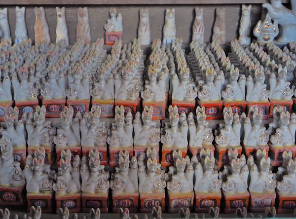
それにしても凄い量だ。
養蚕信仰のガチ具合がひしひしと伝わってくる。
（2022.10.）
お次はみなかみ町にある
茂左衛門地蔵尊の境内にある稲荷神社。
厳しい年貢に対して直訴した事で命を落とした茂左衛門を祭った地蔵尊の一画にある稲荷神。
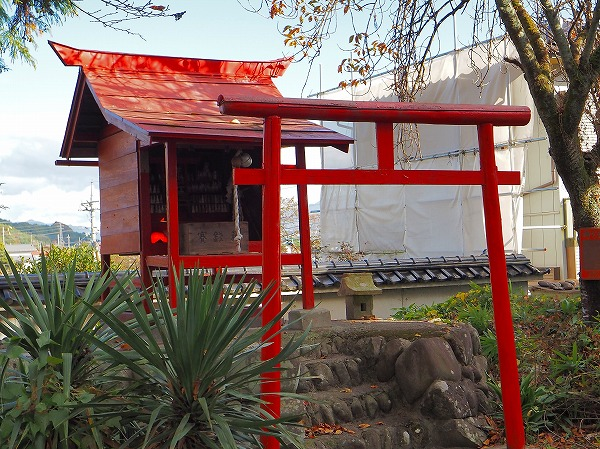
「天下の義人茂左衛門」と上州かるたに詠まれるほど県内限定の有名人だ。
県外の人はほとんど誰も知らないが。
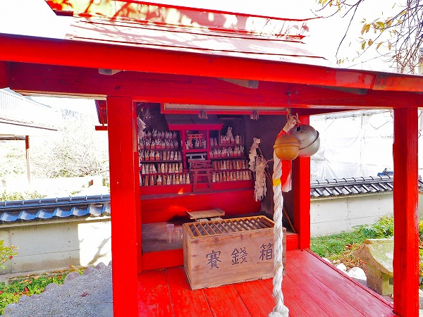
そんな境内の一画にある稲荷社。
五反田正一位稲荷大明神とある。
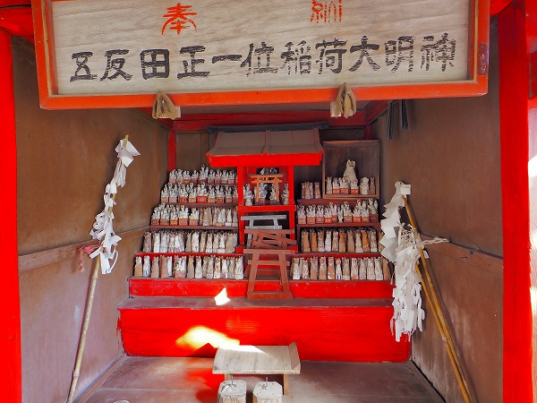
県北地域ではあるが鉄砲狐と左右対称型狐の数はほぼ同数程度か。
県北の方が鉄砲狐が多い、と踏んだが決してそうではないようだ。
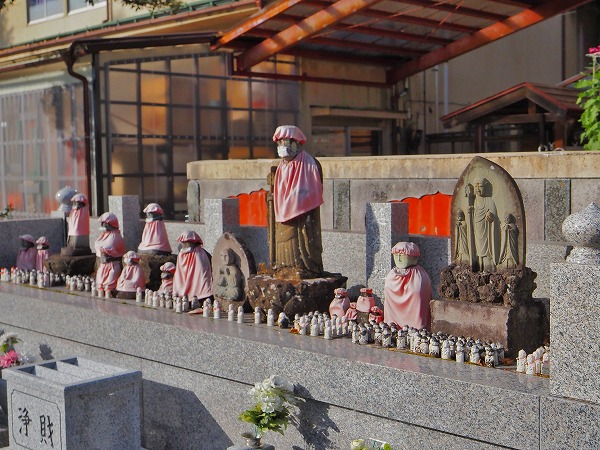
時節柄、お地蔵さんはみなマスクをしていた。
（2022.10.）
前橋市の
総社神社。
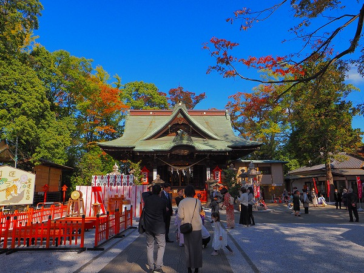
先程の養蚕記念館で見た養蚕大明神のお札を配布しているのがこの神社である。
それ以上に
上野国総鎮守という肩書を持っているので大勢の参拝客で溢れていた。
恐らく前橋市で一番賑わっている神社なのではなかろうか。
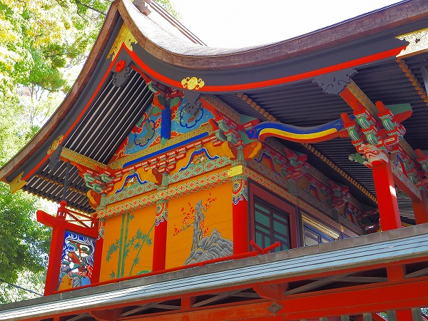
社殿はカラフルに彩られている。
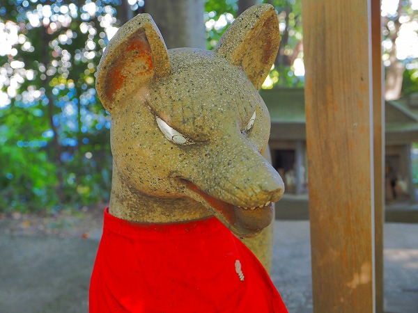
その割に狐の石像は顔が怖い。
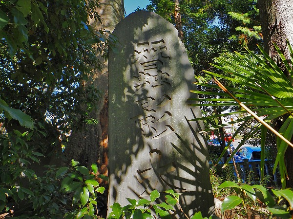
本殿の裏側にあった
蚕影大神の石碑。
養蚕の神様だ。
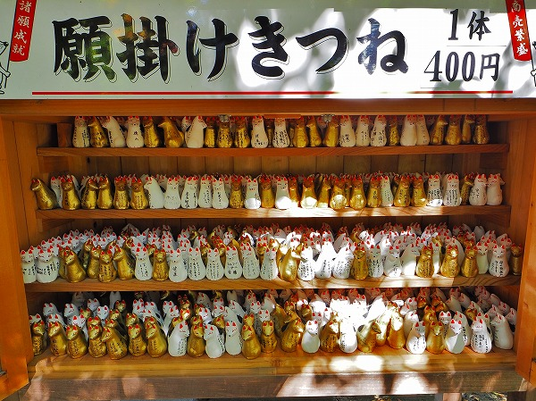
傍らには現代風にアレンジされた狐の置物が販売されていた。
スタイルとしては鉄砲狐だが、白と金の2種類があり、素焼きではなかった。
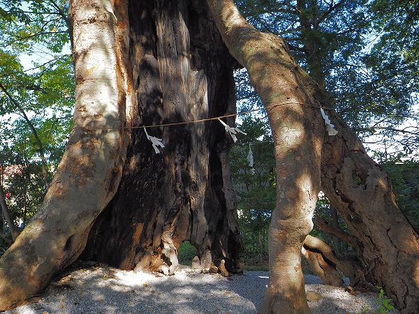
何か凄い壮絶な神木。
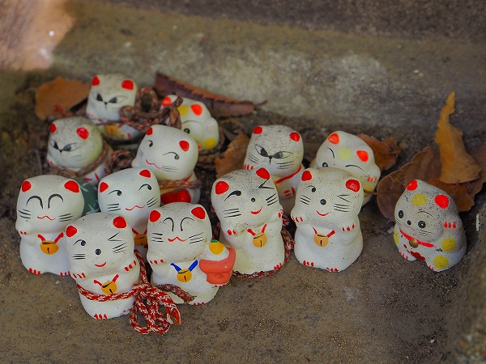
狐？と思ったが猫なの…か？
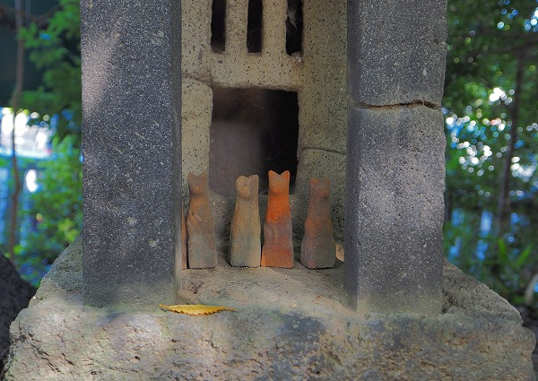
一応鉄砲狐もおりました。
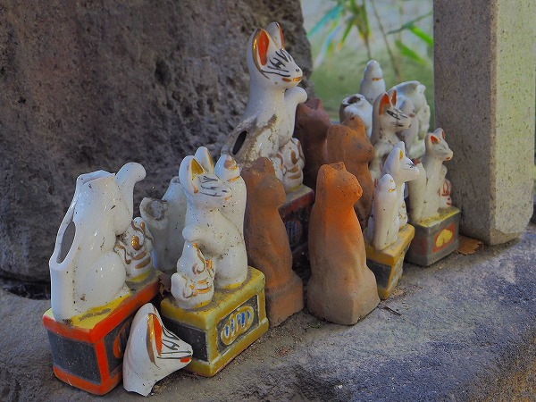
蚕影大神の石碑などがある割には狐奉納の数はあまり多く無かった。
やはり稲荷社の方が狐奉納は多いのだろうか。
（2022.10.）
お次は前橋市の
岩神稲荷神社。
市中心部にも近く、利根川や国道17号線にも近い神社だ。
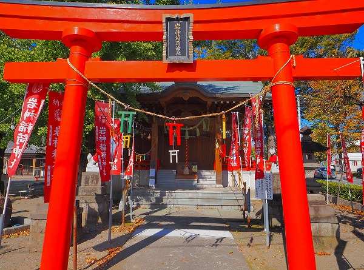
ここは浅間山から流れてきたとされる巨岩が御神体の神社だ。
こちらがその巨岩。
元々は赤城山から流れてきたとされていたが、学術調査の結果、2万4千年前に浅間山の崩落の際に流れてきたものだと判明した。
地表に出ている部分だけで10メートル。
地中には更に10メートル程の岩が埋まっているという。
こんな巨大な岩が浅間山から流れてきたってホントですか？凄くないすか？
学術調査の結果なので間違えないとは思いますけど、それこそ神話とかの話っぽくないですか？
凄いですね。地球。
この神社の特徴として、
色とりどりのミニ鳥居が奉納されている。
境内のあちこちにミニカラー鳥居が奉納されているのだ。
これは近年始まったもので、願い事別に色が決まっているという。
境内のあちこちにミニ鳥居が奉納されている。
狐奉納を調査しに来たのだが、カラー鳥居奉納の方が面白くなってきちゃったぞ。
ミニ鳥居と言えば京都の伏見稲荷神社の鳥居奉納を想起する方も多いだろうが、ここの鳥居はもっと簡略化されたものである。
色とりどりのミニ鳥居が並ぶ様は風変わりでもあり愉快でもある。
色の意味は
赤は健康。
無地は開運。
緑は交通安全。
白は縁結び。
黄色は金運。
靑は合格祈願。
だそうです。
それぞれの願い事別に鳥居を購入して境内に奉納するのである。
何とも楽し気な奉納ではないか。

さて、狐の話に戻る。
数は多くないが、巨石の袂に何体かの狐像が奉納されていた。
養蚕信仰のシーンを見学する、という本来の目的としてはあまり成果は無かった。
しかし代わりに珍しい色とりどりのミニ鳥居奉納が見れたから、まあ、良いか。
（2022.10.）
次の養蚕信仰へGO！